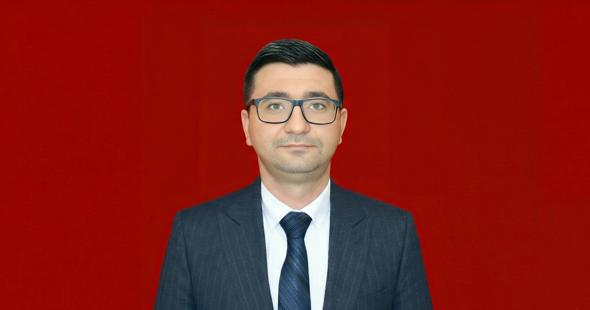

Основные услуги в области растениеводства
Безопасность, контроль вредителей и соответствие международным стандартам на всех этапах — от производства до экспорта продукции.
Подробнее
ООО ASR Development Consulting Group оказывает профессиональные услуги в области сельского хозяйства и здоровья растений: фитосанитарный контроль, агротехническое консультирование и обеспечение соответствия международным требованиям. Наша цель — обеспечить безопасность на всех этапах от производства до экспорта продукции, предотвратить распространение вредителей и облегчить выход на международные рынки.
ООО ASR Development Consulting Group оказывает профессиональные услуги в области сельского хозяйства и здоровья растений.
Безопасность, контроль вредителей и соответствие международным стандартам на всех этапах — от производства до экспорта продукции.
ПодробнееПолное сопровождение — от изучения требований целевых рынков до получения экспортных сертификатов.
ПодробнееПолное управление процессами регистрации — от технических досье до соответствия этикеток требованиям.
ПодробнееУправление рисками безопасности пищевых продуктов, планы санитарии и документация в соответствии с международными стандартами.
ПодробнееОтслеживание продукции на всех этапах, процедуры отзыва и механизмы аудита.
ПодробнееПолное управление процессом сертификации в соответствии с международным стандартом сельского хозяйства, признанным в 80+ странах.
ПодробнееНаша команда состоит из сертифицированных, опытных специалистов в каждой области.

Главный эксперт по здоровью растений, агрономии и сельскому хозяйству
Профессиональный эксперт с многолетним опытом управления и агрономии в ЗАО "Binə Aqro", отличающийся высокой ответственностью и отличными навыками работы в команде. Специализируется на управлении сельскохозяйственным производством, а также на внедрении международных стандартов качества и экологического менеджмента GLOBALG.A.P. и ISO.

Эксперт по безопасности пищевых продуктов и качеству. Обширный опыт в области консультирования, поддержки и обучения в пищевой отрасли с 2016 года.

Эксперт с обширным опытом в области менеджмента пищевого производства и внедрения систем безопасности пищевых продуктов. Профессионал в проведении международных аудитов и управлении проектами.
Гюльбяниз Гаджиева — аудитор и специалист с почти 10-летним профессиональным опытом в области безопасности пищевых продуктов, управления качеством и производства. Она приобрела широкие практические знания в проведении внутренних аудитов, управлении рисками и построении систем HACCP в пищевой промышленности. Также имеет сертификаты и прошла обучение по стандартам ISO 22000, ISO 9001, BRCGS, IFS и ISO/IEC 17025.

Элвин Ширинли — профессиональный Главный Агроном с более чем 7-летним опытом управления высокотехнологичными тепличными комплексами, климат-контроля и установки автоматизированных систем орошения. Обладает глубокими академическими и практическими знаниями в области почвоведения, агрохимии и питания растений. Имеет отличные знания и практические навыки применения систем Priva — передовой технологии современного тепличного хозяйства. Благодаря владению английским языком и образованию в области Бизнес-менеджмента (Магистр), обладает лидерскими качествами для внедрения международных агротехнологических инноваций и управления крупномасштабными аграрными проектами/командами.
Конкретные преимущества и достижения, которые профессиональная поддержка принесёт вашему агробизнесу.
Более быстрое выполнение процессов сертификации и регистрации. Наша профессиональная команда оптимизирует этапы документирования, аудита и утверждения, сводя потери времени к минимуму.
Минимизация рисков несоответствия при экспорте. Обеспечивая полное соответствие международным стандартам, мы устраняем таможенные проблемы и случаи возврата товара.
Повышение продуктивности и качества в сельском хозяйстве. С помощью современных агрономических методов и решений по защите здоровья растений достигается более высокий урожай и качественная продукция.
Расширение возможностей выхода на международные рынки. Обеспечивая все необходимые сертификаты и стандарты, мы создаём благоприятные условия для работы на рынках Европы, Азии и других крупных регионов.
Создание более сильной и конкурентоспособной системы для агросектора. Благодаря устойчивому развитию, инновационным решениям и стратегическому планированию ваша компания занимает лидирующие позиции в отрасли.
Мы гордимся широким портфелем клиентов — от государственных структур до международных компаний.
| Логотип | Клиент | Сектор | Полученные услуги | Статус |
|---|---|---|---|---|

|
Aras Group Продовольственный холдинг | Пищевая промышленность | Активный | |

|
АО «Компания агроинноваций и снабжения» | Сельское хозяйство | Активный | |

|
Baku kimya MMC Пищевое производство | Сельское хозяйство | Активный |
Мы оказываем профессиональные услуги в области сельского хозяйства и здоровья растений: фитосанитарный контроль, агротехническое консультирование и обеспечение соответствия международным требованиям.